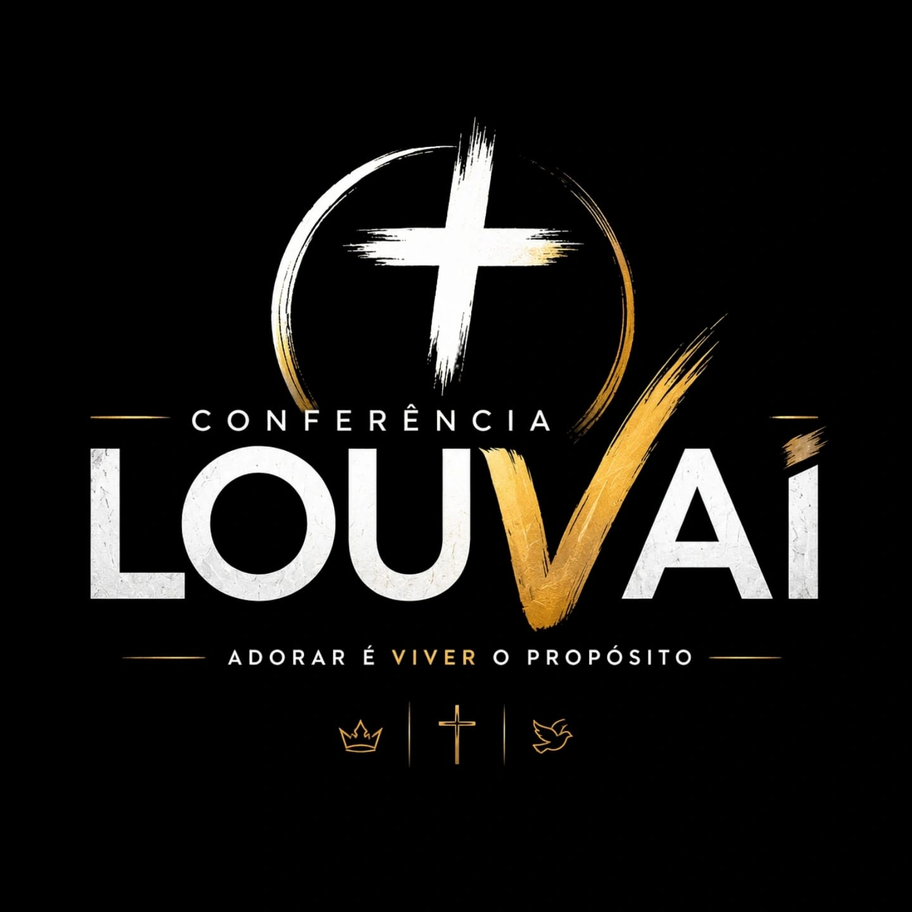
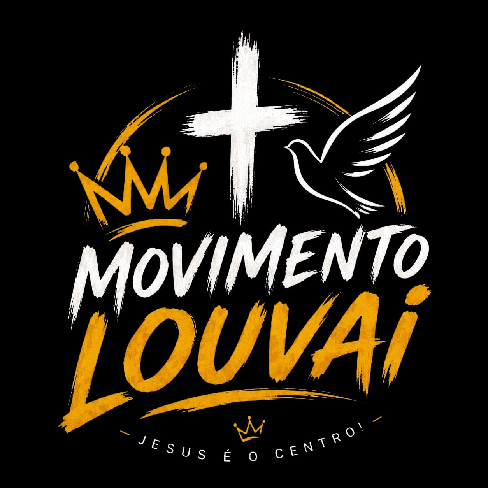

Palavra
Pregações, estudos e reflexões centradas nas Escrituras e no evangelho.

Conferência LouvaiPalavra. Louvor. Comunhão. Missão.
Um encontro para proclamar Cristo, fortalecer a igreja e reunir a cidade em adoração. O objetivo principal é simples e eterno: a glória de Deus.
Nosso centro
A Conferência Louvai nasce para servir igrejas, famílias e pessoas que desejam crescer na Palavra, adorar com alegria e viver a fé de forma pública, bíblica e missionária.
Inspirados por iniciativas que edificam cidades e unem cristãos, queremos construir um ambiente onde a mensagem do evangelho seja clara, Cristo seja exaltado e vidas sejam chamadas à comunhão com Deus.
O que buscamos
Pregações, estudos e reflexões centradas nas Escrituras e no evangelho.
Momentos congregacionais de adoração com músicas que apontam para Cristo.
Um espaço para aproximar igrejas, famílias, jovens e visitantes da cidade.
Uma proposta pública, acolhedora e missionária para anunciar a esperança em Jesus.
Pessoas de fora somando com ensino, testemunho, música e serviço cristão.
Uma equipe dedicada à organização, recepção e apoio durante toda a conferência.
Em construção
A primeira edição está nascendo com cuidado. Datas, local, convidados e grade serão anunciados assim que a organização confirmar cada etapa.
Mobilização de igrejas, parceiros e pessoas que desejam apoiar a visão.
Definição dos momentos de Palavra, louvor, oração, comunhão e evangelismo.
Som, iluminação, recepção, comunicação, logística e cuidado com os participantes.
Um encontro para servir a cidade e proclamar que Jesus é o centro.
Faça parte
Sua contribuição ajuda a preparar um encontro gratuito, acolhedor e bem organizado, com foco em Palavra, louvor, evangelismo e edificação da igreja.
Você pode apoiar com oferta única, contribuição recorrente ou parceria local para tornar essa visão possível.
A chave PIX oficial será divulgada pela organização.
Dúvidas frequentes
Ainda não. A Conferência Louvai começou do zero e está na fase de organização, captação de apoio e definição de estrutura.
A intenção é viabilizar um encontro acessível e sustentado por mantenedores, parceiros e doações.
Você pode apoiar financeiramente, divulgar a proposta ou conectar a organização com parceiros da cidade.
A conferência é o grande encontro. O Movimento Louvai atua em encontros menores, com comunhão, aprendizado da Palavra e proposta evangelística ao longo da cidade.
Contato
Para doações, parcerias, caravanas ou apoio ministerial, fale com a organização da Conferência Louvai pelo WhatsApp.
Jesus é o centro
Encontros menores pela cidade, com comunhão, aprendizado da Palavra, louvor simples e uma proposta evangelística para aproximar pessoas de Cristo.

A proposta
O Movimento Louvai não pretende ter a mesma escala da conferência. Ele existe para manter a chama acesa no cotidiano, criando momentos menores em casas, igrejas, praças, escolas ou espaços parceiros.
Cada encontro deve unir simplicidade, ensino bíblico, oração, louvor e acolhimento, sempre com sensibilidade para receber quem ainda está conhecendo a fé cristã.
Formato
Reuniões em bairros e espaços da cidade, com ambiente próximo e fraterno.
Estudos bíblicos acessíveis, com conversa, escuta e aplicação prática.
Canções e orações que ajudam o grupo a lembrar que Jesus é o centro.
Uma porta aberta para convidados, novos amigos e pessoas em busca de direção.
Duas frentes, uma visão
Um grande encontro de celebração, ensino, louvor e mobilização.
Pequenos encontros constantes para comunhão, Palavra e evangelismo.
Participe
Quem deseja receber um encontro, abrir espaço para comunhão ou entender melhor a proposta pode falar com a organização.